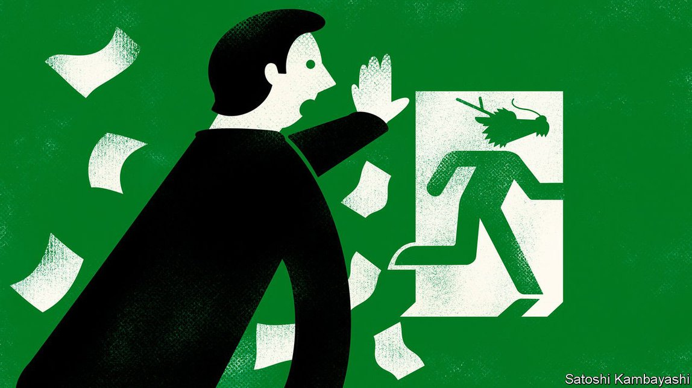

2021-08-24T15:28:26+00:00
梧桐
中国公司从美国交易所退市会如何收场
1.5万亿美元的市值岌岌可危

如今，北京和华盛顿的政客似乎很少能就什么事达成一致。不过它们在终止中国公司在美国交易所上市的问题上倒是异常和谐。去年，在纳斯达克上市的中国饮料配送集团瑞幸咖啡被抓到夸大销售，它的坍塌再度触发了美国政界的不满。其结果就是《外国公司问责法案》（Holding Foreign Companies Accountable Act）的出台，该法案要求在美国交易所交易的公司三年内接受审计，否则将被摘牌。相关细则仍在起草中，但最终可能会引发大量股票被抛售。
中国倒似乎很高兴本国公司离开美国市场。中国网约车公司滴滴刚在纽约上市没几天，中国的监管机构展开的行动就重创其股价，但官员们似乎也不以为意。中国网信办的新规将使一些公司更难在境外上市。7月底，一项规则突然生变，使得为学龄儿童提供服务的在线辅导公司失去海外上市资格，几只在纽约交易的中国股票被抹去了数十亿美元。
中美像这样达成一致的时候虽然罕见，对投资者来说却不是什么好消息。美国市场已经接纳了总市值达1.5万亿美元的中国公司。之前从没有发生过交易所抛弃如此规模的市值。那么，这轮退市可能会对股东造成怎样的损害呢？
中国公司至今仍在纽约交易这一点本身就令人称奇。十年来，北京和华盛顿围绕中国的美国存托凭证（ADR，在美国交易的外国公司股票）的命运交锋不断。2011年，在纽约上市的中国公司的一波会计丑闻开始席卷市场，美国监管机构开始坚持要求查阅某些审计文件。中国官员拒不让步，甚至将分享这些材料列为违法。
有些股票不一定会因为退市经受太多痛苦。哥伦比亚大学商学院的魏尚进指出，许多ADR合约中都写明，投资者可以将这些股份转换成在其他交易所上市的相应证券。一些最大的中国公司已经做好准备，寻求在香港二次上市，这样未来可以将股份转到那里。生物技术集团百济神州于2018年开了在香港二次上市的先河。阿里巴巴2014年在纽约融资250亿美元，2019年在香港二次上市，又融资110亿美元。在纽约上市的236家中国公司中，有16家在香港二次上市，总市值9800亿美元。
对其他公司的股东来说，情况似乎就比较糟糕了。潜在的不稳定因素将拖累股价。（自2月以来，追踪在纽约上市的中国公司的纳斯达克金龙中国指数下跌了45%。）哈佛法学院的杰西·弗里德（Jesse Fried）表示，这将为管理者和其他企业内部人士提供一个低价收购美国股东股票的机会。这些公司最终可能会以高得多的估值在中国大陆或香港重新上市，但ADR的原始投资者不会从重新上市中赚到一分钱。而且股东也不太可能有权审查公司被私有化时的估值，律师事务所King & Spalding的沙斯瓦特·达斯（Shaswat Das）指出。
还有一种更糟的情况。一些公司可能会干脆“进入休眠”，也就是停止向美国监管机构汇报，并被摘牌，而股票完全没人接手。这听起来可能难以置信，但以前也不是没发生过。十年前会计丑闻爆发后，100多家中国公司从纽约的交易所消失，约400亿美元市值灰飞烟灭。许多公司都没有补偿投资者。一般来说股东挽回损失的可能性也很小：由于大多数中国集团在美国几乎没有资产，愤怒的股东要想诉诸法律手段就不得不求助于中国的法院，另一家律师事务所Arnold & Porter的乔尔·格林伯格（Joel Greenberg）说。
因此，明智的做法是不要在退市临近时还持有这些股份。不过这里就有个问题。十年前专家们也说中国企业跨境上市该停了。但自那以后，在美国交易所上市的中国公司的市值增长了十倍。
2021-08-24T15:28:26+00:00
Buttonwood
How the delisting of Chinese firms on American exchanges might play out
$1.5trn of market capitalisation is at stake
THESE DAYS politicians in Beijing and Washington seem to agree on very little. Yet on the subject of ending the listing of Chinese firms on American exchanges they are in uncommon harmony. The collapse last year of Luckin Coffee, a Chinese beverage-delivery group listed on the Nasdaq that was caught inflating its sales, reignited political grievances in America. The result was the Holding Foreign Companies Accountable Act, which requires companies traded on American exchanges to submit to audits or face delisting within three years. The precise rules are still being drawn up, but will probably eventually involve a great shedding of shares.
China, for its part, seems happy for its companies to leave American markets. Its regulators seemed unbothered when their actions demolished the share price of Didi Global, a Chinese ride-hailing company, just days after it listed in New York. New rules from the country’s cyberspace watchdog will make it harder for some firms to list outside of China. A sudden rule change in late July made online-tutoring firms serving school-aged children ineligible for overseas listings, wiping billions of dollars from several New York-traded Chinese stocks.
Rare as this moment of Sino-American agreement is, it hardly spells good news for investors. The American market has come to host $1.5trn-worth of Chinese companies. That sort of market value has not been cast off by exchanges before. So what kind of damage might delisting do to shareholders?
That Chinese companies still trade in New York at all is remarkable. For a decade now Beijing and Washington have sparred over the fate of China’s American Depositary Receipts (ADRs), as the shares of foreign companies trading in America are called. As a wave of accounting scandals at New York-listed Chinese firms began to wash over markets in 2011, American regulators started insisting on gaining access to certain accounting documents. Chinese officials have dug their heels in, refusing the requests and even making sharing the materials a crime.
There are some stocks for which delisting need not involve much pain. Many ADR contracts say that investors can convert those shares into corresponding securities listed on other exchanges, notes Wei Shang-Jin of Columbia Business School. Some of the biggest Chinese companies have been prepared, pursuing secondary listings in Hong Kong to which shares can be transferred. This started with BeiGene, a biotech group, when it launched a secondary listing in Hong Kong in 2018. Alibaba, which raised $25bn in New York in 2014, held a second listing in Hong Kong in 2019 to raise another $11bn. Of the 236 Chinese companies listed in New York, 16 have secondary listings in Hong Kong, with a combined market capitalisation of $980bn.
The situation looks bleaker for shareholders in other firms. Stock prices will be dragged down by the potential for instability. (The Nasdaq Golden Dragon China Index, which tracks Chinese firms listed in New York, is down by 45% since February.) This will give managers and other company insiders a chance to buy out American shareholders’ stock on the cheap, says Jesse Fried of Harvard Law School. The companies could eventually relist in China or Hong Kong at much higher valuations, but the original investors in the ADRs will not see a cent from the relisting. And shareholders are unlikely to have the right to review the valuation at which companies are taken private, notes Shaswat Das of King & Spalding, a law firm.
There is an even worse case. Some companies may simply “go dark”, meaning they stop reporting to American regulators and are delisted with no buyout at all. This might sound far-fetched—but it has happened before. In the aftermath of the accounting scandals of a decade ago, more than 100 Chinese companies vanished from New York’s exchanges, destroying some $40bn in market value. Many did not compensate investors. And shareholders in general stand little chance of recouping losses: because most Chinese groups have few assets in America, an angry shareholder seeking legal recourse would have to go to a Chinese court, says Joel Greenberg of Arnold & Porter, another law firm.
The smart move, then, is not to be caught holding these shares when delisting draws near. But here’s the catch. Ten years ago experts also called time on cross-border listings for Chinese groups. The market capitalisation of Chinese firms listed on American exchanges has risen ten-fold since.
2021-08-24T15:28:26+00:00
梧桐
中國公司從美國交易所退市會如何收場
1.5萬億美元的市值岌岌可危
如今，北京和華盛頓的政客似乎很少能就什麼事達成一致。不過它們在終止中國公司在美國交易所上市的問題上倒是異常和諧。去年，在納斯達克上市的中國飲料配送集團瑞幸咖啡被抓到誇大銷售，它的坍塌再度觸發了美國政界的不滿。其結果就是《外國公司問責法案》（Holding Foreign Companies Accountable Act）的出台，該法案要求在美國交易所交易的公司三年內接受審計，否則將被摘牌。相關細則仍在起草中，但最終可能會引發大量股票被拋售。
中國倒似乎很高興本國公司離開美國市場。中國網約車公司滴滴剛在紐約上市沒幾天，中國的監管機構展開的行動就重創其股價，但官員們似乎也不以為意。中國網信辦的新規將使一些公司更難在境外上市。7月底，一項規則突然生變，使得為學齡兒童提供服務的在線輔導公司失去海外上市資格，幾隻在紐約交易的中國股票被抹去了數十億美元。
中美像這樣達成一致的時候雖然罕見，對投資者來說卻不是什麼好消息。美國市場已經接納了總市值達1.5萬億美元的中國公司。之前從沒有發生過交易所拋棄如此規模的市值。那麼，這輪退市可能會對股東造成怎樣的損害呢？
中國公司至今仍在紐約交易這一點本身就令人稱奇。十年來，北京和華盛頓圍繞中國的美國存托憑證（ADR，在美國交易的外國公司股票）的命運交鋒不斷。2011年，在紐約上市的中國公司的一波會計醜聞開始席捲市場，美國監管機構開始堅持要求查閱某些審計文件。中國官員拒不讓步，甚至將分享這些材料列為違法。
有些股票不一定會因為退市經受太多痛苦。哥倫比亞大學商學院的魏尚進指出，許多ADR合約中都寫明，投資者可以將這些股份轉換成在其他交易所上市的相應證券。一些最大的中國公司已經做好準備，尋求在香港二次上市，這樣未來可以將股份轉到那裡。生物技術集團百濟神州於2018年開了在香港二次上市的先河。阿里巴巴2014年在紐約融資250億美元，2019年在香港二次上市，又融資110億美元。在紐約上市的236家中國公司中，有16家在香港二次上市，總市值9800億美元。
對其他公司的股東來說，情況似乎就比較糟糕了。潛在的不穩定因素將拖累股價。（自2月以來，追蹤在紐約上市的中國公司的納斯達克金龍中國指數下跌了45%。）哈佛法學院的傑西·弗里德（Jesse Fried）表示，這將為管理者和其他企業內部人士提供一個低價收購美國股東股票的機會。這些公司最終可能會以高得多的估值在中國大陸或香港重新上市，但ADR的原始投資者不會從重新上市中賺到一分錢。而且股東也不太可能有權審查公司被私有化時的估值，律師事務所King & Spalding的沙斯瓦特·達斯（Shaswat Das）指出。
還有一種更糟的情況。一些公司可能會幹脆“進入休眠”，也就是停止向美國監管機構彙報，並被摘牌，而股票完全沒人接手。這聽起來可能難以置信，但以前也不是沒發生過。十年前會計醜聞爆發後，100多家中國公司從紐約的交易所消失，約400億美元市值灰飛煙滅。許多公司都沒有補償投資者。一般來說股東挽回損失的可能性也很小：由於大多數中國集團在美國幾乎沒有資產，憤怒的股東要想訴諸法律手段就不得不求助於中國的法院，另一家律師事務所Arnold & Porter的喬爾·格林伯格（Joel Greenberg）說。
因此，明智的做法是不要在退市臨近時還持有這些股份。不過這裡就有個問題。十年前專家們也說中國企業跨境上市該停了。但自那以後，在美國交易所上市的中國公司的市值增長了十倍。